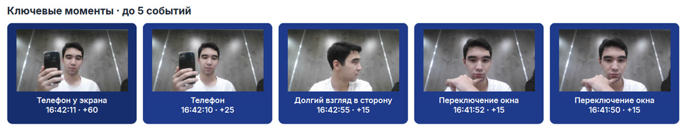
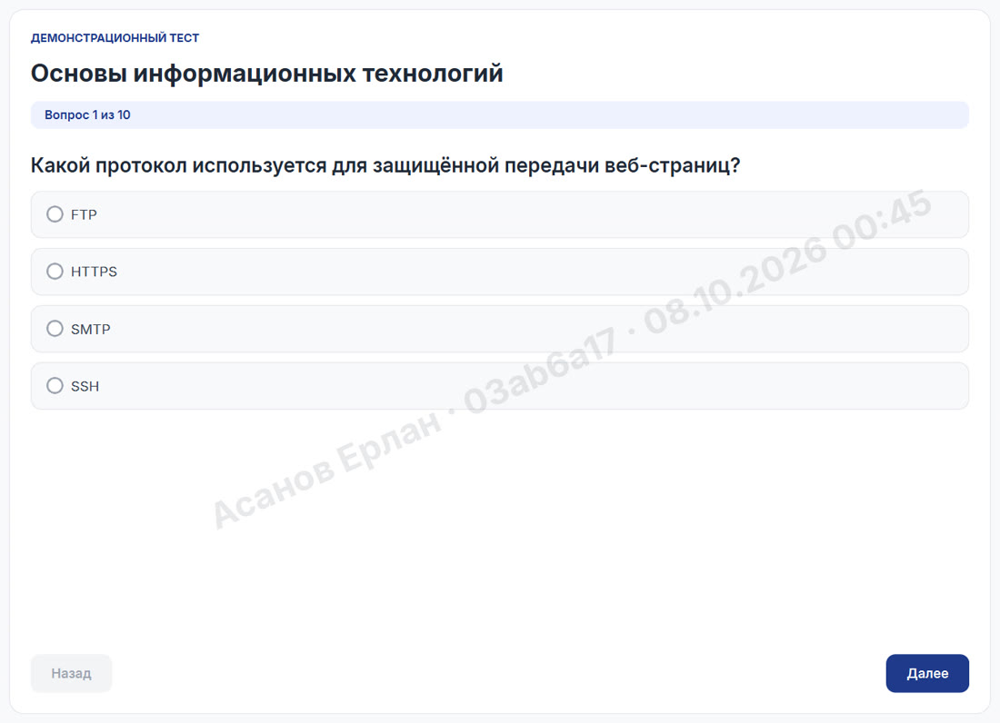
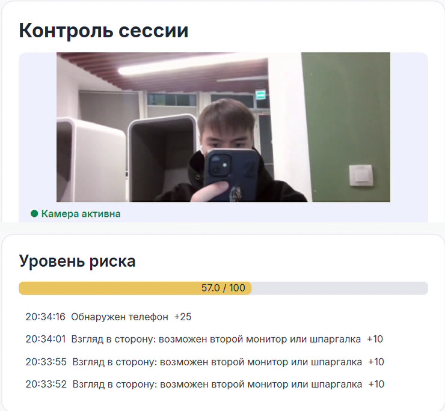
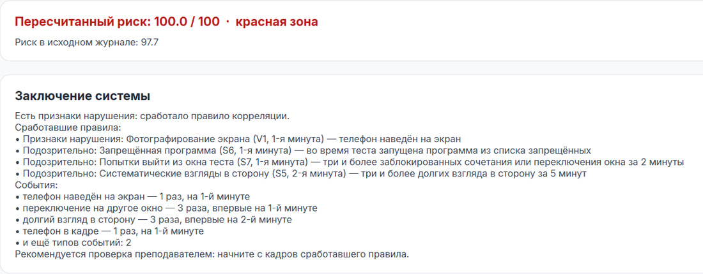

<title>Демо Argus</title>
<meta name="description" content="Argus — локальный прокторинг: защищённое окно экзамена, камера и правила корреляции. Интерактивная симуляция для Demo Day.">
<link rel="preconnect" href="https://fonts.googleapis.com">
<link rel="preconnect" href="https://fonts.gstatic.com" crossorigin>
<link href="https://fonts.googleapis.com/css2?family=Unbounded:wght@500;700&family=Onest:wght@400;500;600;700&family=JetBrains+Mono:wght@400;600&display=swap" rel="stylesheet">
<script src="https://cdn.tailwindcss.com/3.4.17"></script>
<script>
  tailwind.config = {
    corePlugins: { preflight: true },
    theme: {
      extend: {
        colors: {
          bg: "var(--bg)", surface: "var(--surface)", sunk: "var(--sunk)", ink: "var(--ink)",
          muted: "var(--muted)", line: "var(--line)", accent: "var(--accent)",
          "accent-ink": "var(--accent-ink)", ok: "var(--ok)", warn: "var(--warn)", crit: "var(--crit)",
        },
        fontFamily: {
          display: ["Unbounded", "Onest", "system-ui", "sans-serif"],
          body: ["Onest", "system-ui", "Segoe UI", "sans-serif"],
          mono: ["JetBrains Mono", "ui-monospace", "Consolas", "monospace"],
        },
      },
    },
  };
</script>
<style>
  /* Layout: one column of wide bands; the simulator is a two-pane exam room. */
  :root {
    --bg: #F3F5FA; --surface: #FFFFFF; --sunk: #E9EDF6; --ink: #0E1A3A; --muted: #56627E;
    --line: #D8DFEE; --accent: #1E3A8A; --accent-ink: #FFFFFF; --accent-soft: #E3E9FB;
    --ok: #15803D; --ok-soft: #E3F4E8; --warn: #B45309; --warn-soft: #FBEEDD;
    --crit: #B91C1C; --crit-soft: #FBE4E4; --room: #DCE3F1; --skin: #E8C3A0; --shirt: #33427A;
  }
  @media (prefers-color-scheme: dark) {
    :root:not([data-theme="light"]) {
      --bg: #0A1022; --surface: #111A33; --sunk: #0D1530; --ink: #E8EDF9; --muted: #98A4C2;
      --line: #25304F; --accent: #8FA8FF; --accent-ink: #0A1022; --accent-soft: #1A2650;
      --ok: #4ADE80; --ok-soft: #10301F; --warn: #F5A524; --warn-soft: #3A2A10;
      --crit: #F87171; --crit-soft: #3D1717; --room: #1A2444; --skin: #C99A75; --shirt: #4B5EA8;
      color-scheme: dark;
    }
  }
  :root[data-theme="dark"] {
    --bg: #0A1022; --surface: #111A33; --sunk: #0D1530; --ink: #E8EDF9; --muted: #98A4C2;
    --line: #25304F; --accent: #8FA8FF; --accent-ink: #0A1022; --accent-soft: #1A2650;
    --ok: #4ADE80; --ok-soft: #10301F; --warn: #F5A524; --warn-soft: #3A2A10;
    --crit: #F87171; --crit-soft: #3D1717; --room: #1A2444; --skin: #C99A75; --shirt: #4B5EA8;
    color-scheme: dark;
  }
  html { scroll-behavior: smooth; }
  .hidden { display: none !important; }
  body { background: var(--bg); color: var(--ink); font-family: Onest, system-ui, "Segoe UI", sans-serif; }
  h1, h2, h3 { text-wrap: balance; }
  .wrap { max-width: 1180px; margin-inline: auto; padding-inline: 20px; }
  .eyebrow { font: 600 12px/1 "JetBrains Mono", monospace; letter-spacing: .12em; text-transform: uppercase; color: var(--accent); }
  .card { background: var(--surface); border: 1px solid var(--line); border-radius: 18px; }
  .tabnum { font-variant-numeric: tabular-nums; }
  .btn { display: inline-flex; align-items: center; gap: .5rem; border-radius: 12px; font-weight: 600; transition: all .18s ease; }
  .btn:focus-visible, .act:focus-visible, .tab:focus-visible { outline: 3px solid var(--accent); outline-offset: 2px; }
  .btn-primary { background: var(--accent); color: var(--accent-ink); padding: .8rem 1.2rem; }
  .btn-primary:hover { transform: translateY(-1px); box-shadow: 0 8px 22px -10px var(--accent); }
  .btn-ghost { border: 1px solid var(--line); padding: .75rem 1.1rem; color: var(--ink); background: var(--surface); }
  .btn-ghost:hover { border-color: var(--accent); color: var(--accent); }
  .btn[disabled] { opacity: .45; cursor: not-allowed; transform: none; box-shadow: none; }
  .act { display: flex; align-items: center; gap: .6rem; text-align: left; padding: .65rem .8rem; border: 1px solid var(--line);
         border-radius: 12px; background: var(--surface); color: var(--ink); transition: all .15s ease; min-width: 0; }
  .act:hover { border-color: var(--accent); background: var(--accent-soft); }
  .act:active { transform: scale(.98); }
  .act small { display: block; color: var(--muted); font-size: 12px; }
  .chip { display: inline-flex; align-items: center; gap: .35rem; font-size: 12px; padding: .25rem .55rem; border-radius: 999px; background: var(--sunk); color: var(--muted); }
  .chip.on { background: var(--ok-soft); color: var(--ok); }
  .lvl-v { color: var(--crit); background: var(--crit-soft); }
  .lvl-s { color: var(--warn); background: var(--warn-soft); }
  .rule { border-left: 4px solid var(--warn); }
  .rule.v { border-left-color: var(--crit); }
  .rule.fresh { animation: pulse 1.2s ease 1; }
  @keyframes pulse { 0% { box-shadow: 0 0 0 0 var(--crit-soft); transform: translateX(-4px); } 100% { box-shadow: 0 0 0 10px transparent; transform: none; } }
  .flash { animation: flash .9s ease 1; }
  @keyframes flash { from { background: var(--accent-soft); } to { background: transparent; } }
  .tab { padding: .7rem 1rem; border-radius: 12px; font-weight: 600; color: var(--muted); border: 1px solid transparent; transition: all .15s; }
  .tab:hover { color: var(--ink); }
  .tab[aria-selected="true"] { color: var(--accent); background: var(--surface); border-color: var(--line); }
  .bar { height: 10px; border-radius: 999px; background: var(--sunk); overflow: hidden; }
  .bar > span { display: block; height: 100%; border-radius: inherit; background: var(--accent); transform-origin: left; animation: grow 1.4s cubic-bezier(.2,.8,.2,1) 1 both; }
  @keyframes grow { from { transform: scaleX(0); } to { transform: scaleX(1); } }
  .note { color: var(--muted); font-size: 13px; }
  /* Webcam scene */
  .cam { position: relative; aspect-ratio: 4/3; border-radius: 14px; overflow: hidden; background: var(--room); max-width: 100%; }
  .cam svg { width: 100%; height: 100%; display: block; }
  .pose .head, .pose .body, .pose .phone, .pose .phone2, .pose .other, .pose .box, .pose .eyes { transition: transform .45s ease, opacity .35s ease; transform-box: fill-box; transform-origin: center; }
  .pose .phone, .pose .phone2, .pose .other, .pose .box { opacity: 0; }
  .pose[data-pose="side"] .head { transform: translate(26px, 2px) rotate(14deg); }
  .pose[data-pose="side"] .eyes { transform: translateX(9px); }
  .pose[data-pose="down"] .head { transform: translateY(16px) rotate(2deg); }
  .pose[data-pose="down"] .eyes { transform: translateY(6px); }
  .pose[data-pose="phone"] .phone { opacity: 1; }
  .pose[data-pose="phone"] .head { transform: translateY(12px); }
  .pose[data-pose="phone"] .eyes { transform: translateY(6px); }
  .pose[data-pose="phone"] .box.b1 { opacity: 1; }
  .pose[data-pose="aimed"] .phone2 { opacity: 1; }
  .pose[data-pose="aimed"] .box.b2 { opacity: 1; }
  .pose[data-pose="two"] .other { opacity: 1; }
  .pose[data-pose="two"] .head { transform: translate(-14px, 0) rotate(-10deg); }
  .pose[data-pose="away"] .head, .pose[data-pose="away"] .body, .pose[data-pose="away"] .eyes { opacity: 0; transform: translateX(160px); }
  .cam .tag { position: absolute; left: 10px; top: 10px; font: 600 11px/1 "JetBrains Mono", monospace; padding: .35rem .5rem; border-radius: 8px; background: rgba(0,0,0,.55); color: #fff; }
  .cam .rec { position: absolute; right: 10px; top: 10px; display: flex; align-items: center; gap: 6px; font: 600 11px/1 "JetBrains Mono", monospace; color: #fff; background: rgba(0,0,0,.55); padding: .35rem .5rem; border-radius: 8px; }
  .cam .rec i { width: 8px; height: 8px; border-radius: 99px; background: #ef4444; animation: blink 1.2s infinite; }
  @keyframes blink { 50% { opacity: .2; } }
  .shot { border-radius: 14px; border: 1px solid var(--line); background: var(--sunk); width: 100%; height: auto; }
  table.log { width: 100%; border-collapse: collapse; font-size: 13px; }
  table.log td, table.log th { padding: .5rem .5rem; border-bottom: 1px solid var(--line); text-align: left; vertical-align: top; }
  table.log th { color: var(--muted); font-weight: 600; font-size: 12px; }
  table.log tr.off td { color: var(--muted); text-decoration: line-through; }
  .scroll-x { overflow-x: auto; }
  .eye-mark { display: inline-flex !important; align-items: center; justify-content: center; flex-shrink: 0; width: 34px; height: 34px; border-radius: 10px; background: var(--accent); color: var(--accent-ink); }
  .eye-mark svg { display: block; }
  @media (prefers-reduced-motion: reduce) {
    *, *::before, *::after { animation: none !important; transition: none !important; scroll-behavior: auto !important; }
  }
</style>

<!-- Навигация -->
<header class="sticky z-30 border-b border-line" style="top: env(safe-area-inset-top, 0px); background: color-mix(in srgb, var(--bg) 88%, transparent); backdrop-filter: blur(10px);">
  <div class="wrap flex items-center justify-between gap-4 py-3">
    <a href="#top" class="flex items-center gap-2 font-display text-lg font-bold text-ink">
      <span class="eye-mark" data-icon="eye" data-size="20"></span> Argus
    </a>
    <nav class="hidden md:flex items-center gap-6 text-sm text-muted">
      <a class="hover:text-ink transition-all" href="#problem">Проблема</a>
      <a class="hover:text-ink transition-all" href="#video">Видео</a>
      <a class="hover:text-ink transition-all" href="#features">Как устроено</a>
      <a class="hover:text-ink transition-all" href="#metrics">Цифры</a>
      <a class="hover:text-ink transition-all" href="#pilot">Пилот</a>
    </nav>
    <a href="#video" class="btn btn-primary text-sm" style="padding:.55rem .9rem">Смотреть запись</a>
  </div>
</header>

<main id="top">
  <!-- Hero -->
  <section class="wrap grid lg:grid-cols-[1.15fr_.85fr] gap-10 items-center" style="padding-block: 56px 40px;">
    <div class="min-w-0">
      <p class="eyebrow mb-5">Qostanai AI Industry Hackathon 2026 · кейс 3 · команда F5</p>
      <h1 class="font-display font-bold leading-[1.08] text-[34px] sm:text-[46px] lg:text-[54px]">
        Видео остаётся у&nbsp;студента. Преподаватель получает выводы.
      </h1>
      <p class="mt-6 text-lg text-muted max-w-[60ch]">
        Argus — защищённое окно экзамена с камерой. Компьютер студента сам ищет телефон, следит за взглядом и закрывает систему,
        а преподаватель видит всю группу в одном журнале: сработавшие правила, кадры-доказательства и риск.
      </p>
      <div class="mt-8 flex flex-wrap gap-3">
        <button class="btn btn-primary" data-scroll="#video"><span data-icon="play"></span> Смотреть запись</button>
        <a class="btn btn-ghost" href="#features">Как это устроено</a>
      </div>
      <ul class="mt-8 grid sm:grid-cols-3 gap-3 text-sm">
        <li class="flex items-center gap-2"><span class="text-ok" data-icon="lock"></span> Без облака</li>
        <li class="flex items-center gap-2"><span class="text-ok" data-icon="cpu"></span> Обычный ноутбук, без видеокарты</li>
        <li class="flex items-center gap-2"><span class="text-ok" data-icon="wallet"></span> Без оплаты за студента</li>
      </ul>
    </div>
    <!-- Пример вывода системы -->
    <figure class="card p-5 sm:p-6 min-w-0" aria-label="Пример заключения Argus">
      <div class="flex items-center justify-between gap-3">
        <span class="chip lvl-v font-mono">V2 · признак нарушения</span>
        <span class="note font-mono tabnum">14:32:07</span>
      </div>
      <h3 class="mt-4 font-display text-xl font-bold">Списывание с телефона</h3>
      <p class="mt-2 text-muted">Телефон в кадре и взгляд вниз в пределах 30 секунд. Одиночный взгляд вниз уведомления не вызывает.</p>
      
      <figcaption class="note mt-3">Настоящие кадры из тестовой сессии команды. Вердикт ставит преподаватель.</figcaption>
    </figure>
  </section>

  <!-- Актуальность -->
  <section id="problem" class="border-y border-line" style="background: var(--sunk); scroll-margin-top: 70px;">
    <div class="wrap" style="padding-block: 56px;">
      <p class="eyebrow mb-3">Почему это важно</p>
      <h2 class="font-display text-3xl sm:text-4xl font-bold max-w-[24ch]">Онлайн-экзамен без контроля — это экзамен на честность</h2>
      <p class="mt-3 text-muted max-w-[64ch]">Вузы проводят всё больше тестов на компьютерах, а готовые решения либо ничего не видят, либо отправляют видео студентов в чужое облако за плату с каждого экзамена.</p>

      <div class="mt-8 grid sm:grid-cols-2 lg:grid-cols-4 gap-4">
        <div class="card p-5">
          <p class="font-display text-4xl font-bold tabnum">44,7%</p>
          <p class="mt-2 text-sm text-muted">студентов сами признаются, что списывали на онлайн-экзаменах</p>
          <div class="bar mt-4"><span style="width: 44.7%; background: var(--crit)"></span></div>
          <p class="note mt-3">Newton, Essex · систематический обзор, 2023</p>
        </div>
        <div class="card p-5">
          <p class="font-display text-4xl font-bold tabnum">30% → 55%</p>
          <p class="mt-2 text-sm text-muted">столько признавались в списывании до пандемии и во время перехода в онлайн</p>
          <div class="mt-4 grid gap-2 text-xs text-muted">
            <div class="flex items-center gap-2"><span class="w-12 shrink-0">до</span><div class="bar flex-1"><span style="width: 29.9%; background: var(--warn)"></span></div></div>
            <div class="flex items-center gap-2"><span class="w-12 shrink-0">онлайн</span><div class="bar flex-1"><span style="width: 54.7%; background: var(--crit)"></span></div></div>
          </div>
          <p class="note mt-3">Тот же обзор: 29,9% и 54,7%</p>
        </div>
        <div class="card p-5">
          <p class="font-display text-4xl font-bold tabnum">$15–30</p>
          <p class="mt-2 text-sm text-muted">за один экзамен одного студента у сервиса живого онлайн-наблюдения</p>
          <p class="mt-4 text-sm"><span class="font-mono tabnum">25 × 5 × $15 = $1 875</span><br><span class="note">одна группа, одна сессия</span></p>
          <p class="note mt-3">Прайс ProctorU для вуза-клиента</p>
        </div>
        <div class="card p-5">
          <p class="font-display text-4xl font-bold">в РК</p>
          <p class="mt-2 text-sm text-muted">должна храниться база персональных данных — а лицо студента и есть персональные данные</p>
          <p class="note mt-3">Правила сбора и обработки ПД, приказ МЦРИАП № 395/НҚ от 21.10.2020, п. 11</p>
        </div>
      </div>

      <div class="mt-10 card p-0 overflow-hidden">
        <div class="overflow-x-auto">
          <table class="w-full text-sm" style="min-width: 640px; border-collapse: collapse">
            <thead>
              <tr class="text-left text-muted border-b border-line">
                <th class="p-4 font-medium">Что есть сейчас</th>
                <th class="p-4 font-medium">Видит телефон и взгляд</th>
                <th class="p-4 font-medium">Данные остаются в вузе</th>
                <th class="p-4 font-medium">Без интернета</th>
                <th class="p-4 font-medium">Цена</th>
              </tr>
            </thead>
            <tbody>
              <tr class="border-b border-line">
                <td class="p-4 font-semibold">Наблюдатель в аудитории</td>
                <td class="p-4"><span style="color: var(--warn)">один на 30 экранов</span></td>
                <td class="p-4"><span style="color: var(--ok)">да</span></td>
                <td class="p-4"><span style="color: var(--ok)">да</span></td>
                <td class="p-4 text-muted">время преподавателя</td>
              </tr>
              <tr class="border-b border-line">
                <td class="p-4 font-semibold">Safe Exam Browser</td>
                <td class="p-4"><span style="color: var(--crit)">нет камеры</span></td>
                <td class="p-4"><span style="color: var(--ok)">да</span></td>
                <td class="p-4"><span style="color: var(--warn)">нужен сервер теста</span></td>
                <td class="p-4 text-muted">бесплатно</td>
              </tr>
              <tr class="border-b border-line">
                <td class="p-4 font-semibold">Облачный прокторинг</td>
                <td class="p-4"><span style="color: var(--ok)">да</span></td>
                <td class="p-4"><span style="color: var(--crit)">видео в облаке сервиса</span></td>
                <td class="p-4"><span style="color: var(--crit)">нет</span></td>
                <td class="p-4 text-muted">за экзамен или за студента</td>
              </tr>
              <tr style="background: var(--accent-soft)">
                <td class="p-4 font-bold">Argus</td>
                <td class="p-4"><span style="color: var(--ok)">да, на ноутбуке студента</span></td>
                <td class="p-4"><span style="color: var(--ok)">да, видео не уходит</span></td>
                <td class="p-4"><span style="color: var(--ok)">да, локальная сеть</span></td>
                <td class="p-4 font-semibold">лицензия на вуз</td>
              </tr>
            </tbody>
          </table>
        </div>
      </div>
      <p class="note mt-4">Самоотчёты студентов: реальная доля может отличаться. Цены зарубежных сервисов зависят от договора.</p>
    </div>
  </section>

  <!-- Запись реальной сессии -->
  <section id="video" class="wrap" style="padding-block: 56px 8px; scroll-margin-top: 70px;">
    <div class="flex flex-wrap items-end justify-between gap-4 mb-6">
      <div class="min-w-0">
        <p class="eyebrow mb-3">Запись реальной сессии</p>
        <h2 class="font-display text-3xl sm:text-4xl font-bold">Два ноутбука, одна сеть, без интернета</h2>
        <p class="mt-3 text-muted max-w-[62ch]">Студент пробует Alt+Tab, телефон и подсказчика за плечом. Преподаватель видит это на своём ноутбуке в ту же секунду и разбирает сессию по кадрам.</p>
      </div>
    </div>
    <div class="card overflow-hidden" style="padding:0">
      <video src="video/argus-loop.mp4" poster="video/argus-poster.jpg" autoplay muted loop playsinline preload="metadata"
             style="display:block; width:100%; height:auto; aspect-ratio:16/9; background:#0f172a"
             aria-label="Запись демонстрации: тест студента и панель преподавателя"></video>
    </div>
  </section>

  
  <!-- Возможности: табы -->
  <section id="features" class="wrap" style="padding-block: 64px; scroll-margin-top: 70px;">
    <p class="eyebrow mb-3">Как устроено</p>
    <h2 class="font-display text-3xl sm:text-4xl font-bold max-w-[22ch]">Распределённая обработка, централизованный контроль</h2>
    <div class="mt-8 flex flex-wrap gap-2 p-1.5 rounded-2xl" style="background: var(--sunk)" role="tablist" aria-label="Возможности Argus">
      <button class="tab" role="tab" aria-selected="true" aria-controls="t1" id="tab1" data-tab="t1">Защита окружения</button>
      <button class="tab" role="tab" aria-selected="false" aria-controls="t2" id="tab2" data-tab="t2">Камера и ИИ</button>
      <button class="tab" role="tab" aria-selected="false" aria-controls="t3" id="tab3" data-tab="t3">Журнал преподавателя</button>
      <button class="tab" role="tab" aria-selected="false" aria-controls="t4" id="tab4" data-tab="t4">Локальная сеть вуза</button>
    </div>

    <div class="mt-6">
      <div id="t1" role="tabpanel" aria-labelledby="tab1" class="panel grid lg:grid-cols-2 gap-8 items-start">
        <div class="min-w-0">
          <h3 class="font-display text-2xl font-bold">Экзамен в закрытом окне</h3>
          <ul class="mt-5 grid gap-3 text-muted">
            <li class="flex gap-3"><span class="text-accent" data-icon="lock"></span><span>Окно на весь экран поверх остальных; Alt+Tab, Win, PrtScn и Ctrl+C/V перехватываются в любой раскладке.</span></li>
            <li class="flex gap-3"><span class="text-accent" data-icon="eyeoff"></span><span>Окно скрыто от записи экрана: его не видно в AnyDesk, Parsec и трансляции Discord.</span></li>
            <li class="flex gap-3"><span class="text-accent" data-icon="app"></span><span>Видны запрещённые программы, удалённая сессия, второй монитор и программный ввод.</span></li>
            <li class="flex gap-3"><span class="text-accent" data-icon="stamp"></span><span>Водяной знак с ФИО и временем остаётся на любом фото экрана.</span></li>
          </ul>
        </div>
        
      </div>

      <div id="t2" role="tabpanel" aria-labelledby="tab2" class="panel grid lg:grid-cols-2 gap-8 items-start hidden">
        <div class="min-w-0">
          <h3 class="font-display text-2xl font-bold">Две модели для телефона, одна для взгляда</h3>
          <ul class="mt-5 grid gap-3 text-muted">
            <li class="flex gap-3"><span class="text-accent" data-icon="phone"></span><span>YOLOv8s находит телефон, OpenCLIP перепроверяет находку: банка и футляр больше не «телефон».</span></li>
            <li class="flex gap-3"><span class="text-accent" data-icon="eye"></span><span>MediaPipe Face Mesh: взгляд вниз и в сторону, лицо пропало, второе лицо в кадре.</span></li>
            <li class="flex gap-3"><span class="text-accent" data-icon="cpu"></span><span>Всё считается на процессоре ноутбука студента: анализ 6 раз в секунду, без видеокарты и без сервера.</span></li>
            <li class="flex gap-3"><span class="text-accent" data-icon="lock"></span><span>Видео не записывается и не передаётся. Сохраняются только кадры событий.</span></li>
          </ul>
        </div>
        
      </div>

      <div id="t3" role="tabpanel" aria-labelledby="tab3" class="panel grid lg:grid-cols-2 gap-8 items-start hidden">
        <div class="min-w-0">
          <h3 class="font-display text-2xl font-bold">Выводы вместо часов видео</h3>
          <ul class="mt-5 grid gap-3 text-muted">
            <li class="flex gap-3"><span class="text-accent" data-icon="rules"></span><span>16 правил корреляции V1–V7 / S1–S9: нарушение — это сочетание событий во времени.</span></li>
            <li class="flex gap-3"><span class="text-accent" data-icon="users"></span><span>Активные сессии и общий журнал всей группы с итогом по правилам и фильтром «с нарушениями».</span></li>
            <li class="flex gap-3"><span class="text-accent" data-icon="check"></span><span>Ложное событие снимается одной галочкой, риск пересчитывается. Вердикт ставит человек.</span></li>
            <li class="flex gap-3"><span class="text-accent" data-icon="file"></span><span>Отчёт по сессии — один HTML-файл с кадрами.</span></li>
          </ul>
        </div>
        
      </div>

      <div id="t4" role="tabpanel" aria-labelledby="tab4" class="panel grid lg:grid-cols-2 gap-8 items-start hidden">
        <div class="min-w-0">
          <h3 class="font-display text-2xl font-bold">Сервер кафедры, а не облако</h3>
          <ul class="mt-5 grid gap-3 text-muted">
            <li class="flex gap-3"><span class="text-accent" data-icon="laptop"></span><span>Каждый ноутбук студента сам выполняет компьютерное зрение и защиту.</span></li>
            <li class="flex gap-3"><span class="text-accent" data-icon="server"></span><span>Компьютер преподавателя или сервер кафедры получает только события и кадры к ним.</span></li>
            <li class="flex gap-3"><span class="text-accent" data-icon="wifi"></span><span>Пропала сеть — экзамен идёт дальше; недоставленное досылается из локальной базы, кадры не теряются.</span></li>
            <li class="flex gap-3"><span class="text-accent" data-icon="lock"></span><span>Нет видеопотоков, поэтому серверу не нужна видеокарта.</span></li>
          </ul>
        </div>
        <div class="card p-5 min-w-0" aria-label="Схема: ноутбуки студентов отправляют события на сервер кафедры">
          <div class="grid grid-cols-3 gap-3 text-center text-sm">
            <div class="rounded-xl border border-line p-3"><span class="text-accent" data-icon="laptop"></span><p class="mt-1 font-semibold">Студент 1</p><p class="note">CV + защита</p></div>
            <div class="rounded-xl border border-line p-3"><span class="text-accent" data-icon="laptop"></span><p class="mt-1 font-semibold">Студент 2</p><p class="note">CV + защита</p></div>
            <div class="rounded-xl border border-line p-3"><span class="text-accent" data-icon="laptop"></span><p class="mt-1 font-semibold">Студент 30</p><p class="note">CV + защита</p></div>
          </div>
          <div class="flex items-center justify-center gap-2 my-4 text-muted text-sm font-mono">
            <span data-icon="down"></span> события и кадры · локальная сеть · без видео
          </div>
          <div class="rounded-xl p-4 text-center" style="background: var(--accent-soft)">
            <span class="text-accent" data-icon="server"></span>
            <p class="mt-1 font-semibold">Журнал кафедры</p>
            <p class="note">сессии · кадры · риск · вердикты · отчёты в браузере</p>
          </div>
        </div>
      </div>
    </div>
  </section>

  <!-- Метрики -->
  <section id="metrics" class="border-y border-line" style="background: var(--sunk); scroll-margin-top: 70px;">
    <div class="wrap" style="padding-block: 64px;">
      <p class="eyebrow mb-3">Цифры</p>
      <h2 class="font-display text-3xl sm:text-4xl font-bold">Мы измеряли, а не только запускали</h2>
      <div class="mt-8 grid sm:grid-cols-2 lg:grid-cols-4 gap-4">
        <div class="card p-5">
          <p class="font-display text-4xl font-bold tabnum">16<span class="text-muted text-2xl"> из 19</span></p>
          <p class="mt-2 text-sm text-muted">кадров с телефоном распознаны, включая тыльную сторону и наклон</p>
          <div class="bar mt-4"><span style="width: 84%"></span></div>
        </div>
        <div class="card p-5">
          <p class="font-display text-4xl font-bold tabnum">4 → 1</p>
          <p class="mt-2 text-sm text-muted">ложных срабатываний на 17 кадрах без телефона после проверки CLIP</p>
          <div class="mt-4 grid gap-2 text-xs text-muted">
            <div class="flex items-center gap-2"><span class="w-14 shrink-0">только YOLO</span><div class="bar flex-1"><span style="width: 23.5%; background: var(--crit)"></span></div></div>
            <div class="flex items-center gap-2"><span class="w-14 shrink-0">+ CLIP</span><div class="bar flex-1"><span style="width: 5.9%; background: var(--ok)"></span></div></div>
          </div>
        </div>
        <div class="card p-5">
          <p class="font-display text-4xl font-bold tabnum">300+</p>
          <p class="mt-2 text-sm text-muted">автотестов на Windows в GitHub Actions: события, риск, защита, правила, журнал</p>
          <div class="bar mt-4"><span style="width: 100%"></span></div>
        </div>
        <div class="card p-5">
          <p class="font-display text-4xl font-bold tabnum">0 байт</p>
          <p class="mt-2 text-sm text-muted">видео уходит с ноутбука студента. Преподаватель получает события и кадры</p>
          <div class="bar mt-4"><span style="width: 100%; background: var(--ok)"></span></div>
        </div>
      </div>
      <p class="note mt-4">Набор кадров небольшой и снят командой в одной комнате: это ориентир, а не метрика точности.</p>

      <div class="mt-10 grid lg:grid-cols-2 gap-4">
        <div class="card p-6">
          <p class="eyebrow">Рынок Казахстана</p>
          <div class="mt-4 flex flex-wrap gap-8">
            <div><p class="font-display text-4xl font-bold tabnum">113</p><p class="text-sm text-muted">вузов</p></div>
            <div><p class="font-display text-4xl font-bold tabnum">624,5 тыс.</p><p class="text-sm text-muted">студентов</p></div>
          </div>
          <p class="note mt-4">Бюро национальной статистики, начало 2024–2025 учебного года.</p>
        </div>
        <div class="card p-6">
          <p class="eyebrow">Модель оплаты</p>
          <div class="mt-4 grid gap-3 text-sm">
            <div class="flex items-center justify-between gap-3 rounded-xl border border-line px-4 py-3">
              <span>Облачный прокторинг, пример: Proctorio</span><span class="font-mono font-semibold tabnum">$9 за студента / год</span>
            </div>
            <div class="flex items-center justify-between gap-3 rounded-xl px-4 py-3" style="background: var(--accent-soft)">
              <span class="font-semibold">Argus</span><span class="font-mono font-semibold">лицензия на вуз, без оплаты за студента</span>
            </div>
          </div>
          <p class="note mt-4">Цена Proctorio — из открытого договора Santa Rosa Junior College на 2025–2026 год.</p>
        </div>
      </div>
    </div>
  </section>

  <!-- Пилот -->
  <section id="pilot" class="wrap" style="padding-block: 64px; scroll-margin-top: 70px;">
    <p class="eyebrow mb-3">Внедрение в КРУ</p>
    <h2 class="font-display text-3xl sm:text-4xl font-bold">От прототипа до сервера кафедры</h2>
    <ol class="mt-8 grid md:grid-cols-3 gap-4">
      <li class="card p-6">
        <p class="font-mono text-sm text-accent">Сейчас · MVP</p>
        <h3 class="mt-2 font-display text-xl font-bold">Работает на ноутбуках</h3>
        <p class="mt-3 text-sm text-muted">Защита и камера у студента, активные сессии и общий журнал на компьютере преподавателя, правила корреляции.</p>
      </li>
      <li class="card p-6">
        <p class="font-mono text-sm text-accent">Пилот · одна кафедра</p>
        <h3 class="mt-2 font-display text-xl font-bold">20–30 студентов</h3>
        <p class="mt-3 text-sm text-muted">Промежуточный контроль, отчёт по ложным срабатываниям, гарантированная синхронизация, защищённый канал и авторизация.</p>
      </li>
      <li class="card p-6">
        <p class="font-mono text-sm text-accent">Внедрение</p>
        <h3 class="mt-2 font-display text-xl font-bold">Сервер кафедры</h3>
        <p class="mt-3 text-sm text-muted">Установка в компьютерные классы через Active Directory, тест из Moodle КРУ в защищённом окне, риск в журнале оценок.</p>
      </li>
    </ol>
    <div class="mt-10 card p-6 flex flex-wrap items-center justify-between gap-4">
      <div class="min-w-0">
        <h3 class="font-display text-xl font-bold">Просим одну кафедру на пилот</h3>
        <p class="mt-1 text-sm text-muted">Команда F5: Алдияр, Максим, Артём, Карим, Нурлыбек.</p>
      </div>
      <a class="btn btn-primary" href="https://github.com/champaldi/Argus-Proctoring" target="_blank" rel="noopener"><span data-icon="code"></span> Код на GitHub</a>
    </div>
  </section>
</main>

<footer class="border-t border-line">
  <div class="wrap py-8 flex flex-wrap items-center justify-between gap-3 text-sm text-muted">
    <span class="flex items-center gap-2"><span class="eye-mark" style="width:26px;height:26px;border-radius:8px" data-icon="eye" data-size="15"></span> Argus · локальный прокторинг</span>
    <span>Qostanai AI Industry Hackathon 2026 · кейс 3</span>
  </div>
</footer>

<script>
(() => {
  // ---------- Иконки (контурные, 24×24) ----------
  const ICONS = {
    eye: '<path d="M2 12s3.5-7 10-7 10 7 10 7-3.5 7-10 7S2 12 2 12z"/><circle cx="12" cy="12" r="3"/>',
    eyeoff: '<path d="M3 3l18 18"/><path d="M10.6 5.1A10.8 10.8 0 0 1 12 5c6.5 0 10 7 10 7a17.6 17.6 0 0 1-3.2 4.2M6.6 6.6C3.8 8.4 2 12 2 12s3.5 7 10 7a9.8 9.8 0 0 0 5.4-1.6"/><path d="M9.9 9.9a3 3 0 0 0 4.2 4.2"/>',
    shield: '<path d="M12 22s8-4 8-10V5l-8-3-8 3v7c0 6 8 10 8 10z"/>',
    webcam: '<circle cx="12" cy="10" r="7"/><circle cx="12" cy="10" r="3"/><path d="M8 21h8M12 17v4"/>',
    wifi: '<path d="M5 12.6a10 10 0 0 1 14 0M8.5 16a5 5 0 0 1 7 0M2 9a15 15 0 0 1 20 0"/><circle cx="12" cy="19.5" r="1"/>',
    phone: '<rect x="7" y="2" width="10" height="20" rx="2"/><path d="M11 18h2"/>',
    aim: '<rect x="3" y="3" width="11" height="16" rx="2"/><path d="M14 9l7-3v12l-7-3"/>',
    side: '<circle cx="9" cy="12" r="6"/><path d="M15 12h7M19 9l3 3-3 3"/>',
    down: '<path d="M12 4v14M6 12l6 6 6-6"/>',
    users: '<circle cx="9" cy="8" r="4"/><path d="M2 21c0-4 3-6 7-6s7 2 7 6"/><circle cx="18" cy="9" r="3"/><path d="M22 20c0-3-2-5-5-5"/>',
    away: '<circle cx="12" cy="8" r="4"/><path d="M4 21c0-4 4-6 8-6"/><path d="M16 17l5 5M21 17l-5 5"/>',
    keyboard: '<rect x="2" y="6" width="20" height="12" rx="2"/><path d="M6 10h.01M10 10h.01M14 10h.01M18 10h.01M7 14h10"/>',
    app: '<rect x="3" y="4" width="18" height="16" rx="2"/><path d="M3 9h18M7 6.5h.01M10 6.5h.01"/>',
    power: '<path d="M12 2v10"/><path d="M5.6 6.6a9 9 0 1 0 12.8 0"/>',
    clock: '<circle cx="12" cy="12" r="9"/><path d="M12 7v5l3 3"/>',
    play: '<path d="M7 4l13 8-13 8z"/>',
    rotate: '<path d="M3 12a9 9 0 1 0 3-6.7L3 8"/><path d="M3 3v5h5"/>',
    flag: '<path d="M5 22V3"/><path d="M5 4h11l-2 4 2 4H5"/>',
    file: '<path d="M14 2H6a2 2 0 0 0-2 2v16a2 2 0 0 0 2 2h12a2 2 0 0 0 2-2V8z"/><path d="M14 2v6h6M8 13h8M8 17h6"/>',
    lock: '<rect x="4" y="11" width="16" height="10" rx="2"/><path d="M8 11V7a4 4 0 0 1 8 0v4"/>',
    cpu: '<rect x="6" y="6" width="12" height="12" rx="2"/><path d="M9 2v4M15 2v4M9 18v4M15 18v4M2 9h4M2 15h4M18 9h4M18 15h4"/>',
    wallet: '<rect x="2" y="6" width="20" height="14" rx="2"/><path d="M16 13h.01M2 10h20"/>',
    laptop: '<rect x="4" y="4" width="16" height="11" rx="1.5"/><path d="M2 19h20"/>',
    panel: '<rect x="3" y="3" width="18" height="18" rx="2"/><path d="M3 9h18M9 21V9"/>',
    stamp: '<path d="M5 21h14M8 17h8l1-4H7z"/><path d="M12 13V8"/><circle cx="12" cy="5" r="3"/>',
    rules: '<path d="M4 6h10M4 12h16M4 18h7"/><circle cx="18" cy="6" r="2"/><circle cx="15" cy="18" r="2"/>',
    check: '<path d="M4 12l5 5L20 6"/>',
    server: '<rect x="3" y="3" width="18" height="7" rx="1.5"/><rect x="3" y="14" width="18" height="7" rx="1.5"/><path d="M7 6.5h.01M7 17.5h.01"/>',
    code: '<path d="M8 6l-6 6 6 6M16 6l6 6-6 6"/>',
  };
  function paintIcons(root = document) {
    root.querySelectorAll("[data-icon]").forEach((el) => {
      const size = el.dataset.size || 18;
      el.innerHTML = `<svg width="${size}" height="${size}" viewBox="0 0 24 24" fill="none" stroke="currentColor" stroke-width="1.9" stroke-linecap="round" stroke-linejoin="round" aria-hidden="true">${ICONS[el.dataset.icon] || ""}</svg>`;
      el.style.display = "inline-flex";
      el.style.flexShrink = "0";
    });
  }

  // Плавный скролл
  document.querySelectorAll("[data-scroll]").forEach((b) => b.addEventListener("click", () => {
    document.querySelector(b.dataset.scroll).scrollIntoView({ behavior: "smooth", block: "start" });
  }));

  // Табы
  const tabs = [...document.querySelectorAll('[role="tab"]')];
  function select(tab) {
    tabs.forEach((t) => {
      const on = t === tab;
      t.setAttribute("aria-selected", on ? "true" : "false");
      t.tabIndex = on ? 0 : -1;
      document.getElementById(t.dataset.tab).classList.toggle("hidden", !on);
    });
  }
  tabs.forEach((t, i) => {
    t.addEventListener("click", () => select(t));
    t.addEventListener("keydown", (e) => {
      if (e.key !== "ArrowRight" && e.key !== "ArrowLeft") return;
      const next = tabs[(i + (e.key === "ArrowRight" ? 1 : tabs.length - 1)) % tabs.length];
      select(next); next.focus();
    });
  });

  paintIcons();
  select(tabs[0]);
})();
</script>
